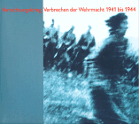

|
Vernichtungskrieg. Verbrechen der Wehrmacht 1941 bis 1944 |
Bücher online bestellen mit www.amazon.de

Lesen Sie die Einleitung von Hannes Heer
Eine Ausstellung und ihre Folgen.
Diese Ausstellung hat wie kaum eine andere die deutsche und österreichische Gesellschaft
aufgerüttelt und verstört. wie konnte es geschehen, daß die Rolle der Wehrmacht im
Nationalsozialismus einerseits so lange ein Tabu hatte bleiben können - und wie drängend mußten
anderseits die Probleme sein, daß sie so heftig an die Oberfläche kamen? Der vorliegende Band
zieht nach vier Jahren Bilanz der Rezeption der Ausstellung. gestützt auf ein umfangreiches
Vorübergehende Schließung
aktuelle Presseschau
Braunschweig und New York verschoben.
Ausstellungort Oktober 1999:Osnabrück
Seit dem 1. August 1999 kümmert sich der Verein zur Förderung der Ausstellung »Vernichtungskrieg. Verbrechen der Wehrmacht 1941 bis 1944« e.V. um die Presentation der Ausstellung in weitern 50 Städten in Deutschland und Österreich.
lesen Sie einige Presseberichte
Ab 2.Dezember ist die amerikanische Version der Ausstellung in New York City zu sehen. Die Copper Union wird sie bis 5. Februar 2000 in der Houghton Gallery zeigen. Fuer die Reise nach Amerika wurde die Ausstellung ueberarbeitet und um einen Prolog "Die deutsche Armee im Nationalsozialistischen Staat 193301939" erweitert. In ihm wird die Entwicklung der Wehrmacht unter den Nazis und die systematische Vorbereitung eines Vernichtungskrieges seit 1933 und dessen Umsetzung 1939 in Polen gezeigt.